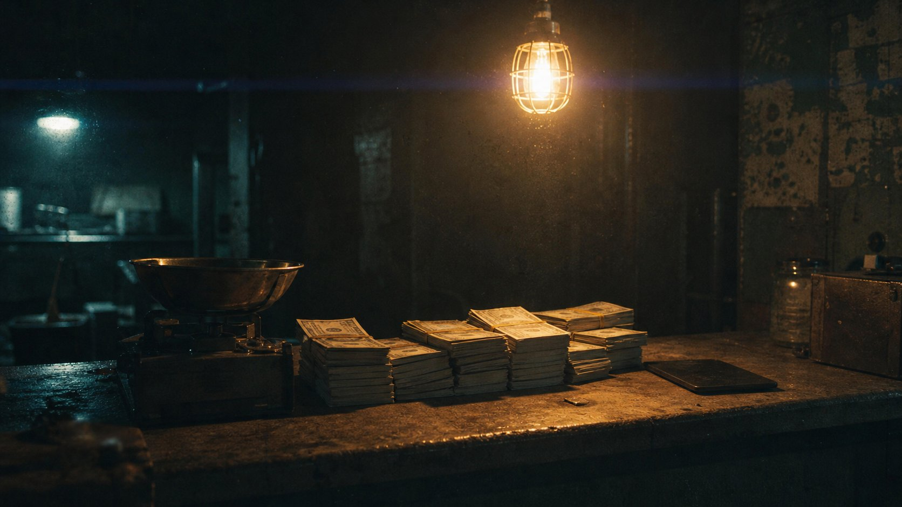
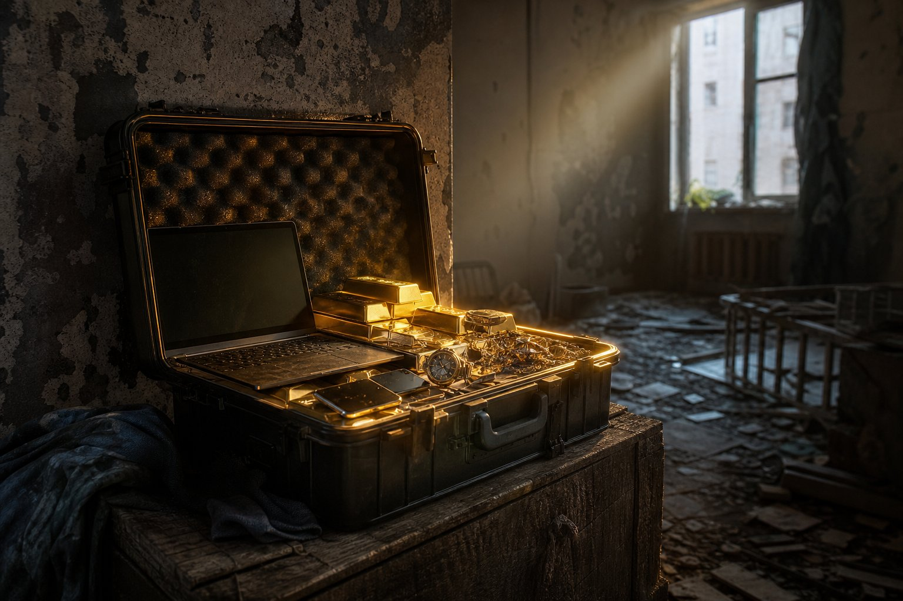

1. Les 4 règles qui regulator votre économie
| Règle | Chiffre | Pourquoi |
|---|---|---|
| Valeur par slot | ≥ 5 000 Koen | Un 1×1 à 10 000 K bat un 4×1 à 20 000 K |
| Budget de kit | ≤ 20 % du stash | 500 K de banque → 100 K max ; une mort ne doit pas vous arrêter |
| Barter inutile | ≥ 8 000 K par slot | Ruban 800, allumettes 400, vis 600 : du bruit de slot |
| Seuil de vente | 4 000 K | Sous ce seuil, vendez au contact (immédiat, sans frais) ; au-dessus, passez par le marché |
L'erreur qui coûte le plus cher
Monter un kit à 600 000 Koen « parce que c'est la saison Forbidden ». Si vous mourez, vous avez perdu quatre mois d'économie en une raid. La bonne question n'est jamais « qu'est-ce que j'ai ? » mais « qu'est-ce que je peux me permettre de perdre aujourd'hui ? ».
2. Les revenus passifs — l'argent sans risque
Le flip Deke Vinson
Deke Vinson réapprovisionne toutes les 2 à 3 heures (avec un gros reset à 22 h PST). Ses articles sont souvent sous-évalués par rapport au marché. Exemples de marges observées :
| Article | Prix Deke | Prix marché | Marge |
|---|---|---|---|
| Armure Tier 4 | ≈ 34 000 | ≈ 56 000 | +22 000 |
| Bundle M855 (120 cartouches) | ≈ 21 000 | ≈ 57 000 | +36 000 |
| Lunette thermique | ≈ 50 000 | ≈ 150 000 | +100 000 |
| Sac à dos | 20 000 | 67 000 | +47 000 |
La technique du refresh
Quand vous achetez des pièces pour gunsmithing, rafraîchissez plusieurs fois les prix : les nouveaux articles moins chers apparaissent. Sur un build d'arme, c'est des milliers de Koen économisés. Et pour vendre : ne posez jamais au prix plancher. Si le marché suggère 5 475 K pour un sac et que le prix moyen est 6 750 K, positionnez-vous entre les deux.
3. Les runs gratuits (Covert Ops / scav)
- Vous entrez avec un équipement généré aléatoirement : zéro risque financier.
- Le mode se recharge : les estimations de la communauté situent le cooldown autour de 15 minutes.
- Rendement typique : 150 000 à 500 000 Koen par extraction en ciblant les zones à fort conflit (Motel de Farm, Hôtel de Northridge) après que les gros combats se sont calmés.
- Bonus : en éliminant des boss comme Fred à Northridge, on peut récupérer le jeton Wedding Ring et de l'armure T4.
- Enchaîner les missions Covert Ops hebdomadaires rapporte environ 3 millions de Koen au total.
Où aller en scav
Les zones de conflit après le combat : les conteneurs restent, les joueurs sont partis. À noter : la règle des 5 000 Koen par slot s'applique encore plus en scav — votre sac ne vaut rien si vous ne le remplissez pas.
4. Le marché : la mécanique
- 12 slots par dépôt, 500 objets maximum par semaine.
- Des frais de gestion sont prélevés sur le prix de vente, variables selon la valeur de l'objet et la durée de mise en ligne.
- Le marché propose le prix plancher et le prix moyen de chaque objet : c'est votre référence de négociation.
- Le prix moyen est calculé à partir des ventes réelles et est plus représentatif que le prix affiché.
- Les objets « Check Usage » (fonction S7 du Storage) permettent de comparer instantanément le prix de marché, le prix contact et le prix de craft d'un même objet.
La règle de placement
Pour vendre vite, posez légèrement sous le prix le plus bas du marché. Pour maximiser, posez entre le plancher et le prix moyen. Et surtout : vendez en lots les objets de faible valeur (poudre, munitions bon marché) — un stack par slot au lieu d'un par pile.
5. L'argent gratuit des événements
| Source | Gain | Fréquence |
|---|---|---|
| Bonus de connexion | Millions de Koen annoncés à l'ouverture de la saison | Journée |
| Défi de Merit | 3× Koen sur votre meilleur Merit hebdomadaire, jusqu'à 3 000 000 K/semaine | Hebdomadaire (lun. 5 h UTC) |
| Pass de saison | Des Koen sur la piste gratuite et en récompense de paliers | Continue |
| Festival Biohazard & Automne | Check-in, boutique, Défi de Vinson, Lunar Soil Sample | Depuis le 24 sept. 2026 |
| Zombie No Man's Land | Pass de check-in, paliers à 4 / 8 / 16 tâches quotidiennes | Hebdomadaire |
| Premium Koen Random Bundles | Koen contre un bundle aléatoire | Événement limité |

6. Les meilleures cartes pour l'argent
| Carte | Pourquoi |
|---|---|
| Valley | Considérée comme la meilleure carte pour l'argent : beaucoup de loot de valeur, armes et accessoires. La route Beach Villa → Radar Station cumule des caisses d'armes et des clés valorisées jusqu'à 1,85 M Koen |
| Farm | Route Motel → Stables : 3–4 caisses moyennes de 20 000 à 50 000 K. En Heavy Infected Zone, le loot est sensiblement plus élevé |
| Northridge | Carte longue et exposée : 5–6 stacks de munitions et 2× le médical pour un run propre. Les classes d'élite S7 y rendent le combat plus dangereux qu'avant |
| Zombie Endless | Le seul PvE pur de la S7 : Airport, escouade de 1 à 4, loadout imposé. Le loot amplifié par le smelter compense l'absence de PvP |
7. Le kit budget rentable
| Poste | Option | Coût |
|---|---|---|
| Fusil CQB | MPX (~88 000 K) avec AP6.3 T3 | 88 000 |
| Fusil longue distance | BM59 ou SKS de base | < 30 000 |
| Gilet | 6B23 | 50 000 |
| Casque | SH12 | 16 000 |
| Rig | 926 chest rig | 12 000 |
La logique du kit budget
Un kit à 80 000 – 100 000 Koen est le cœur de l'économie saine : une seule extraction de 270 000 K (un coupe de'or) couvre plusieurs morts. Un budget serré n'est pas une insulte tactique : c'est ce qui permet de jouer 50 raids par semaine au lieu de 3.
8. La gestion du sac
- Un slot, c'est de l'argent. Un thermique à 50 000 K sur 1 slot vaut mieux qu'une armure à 100 000 K sur 4 slots.
- Case sécurisée : ce qu'elle contient est sauvé même si vous mourez — mais elle ne peut pas contenir de munitions rouges depuis la S6, et elle ne sert pas en raid.
- Poids : au-delà d'un certain seuil, vous courez plus lentement et votre endurance s'effondre. Le Strength Booster ou le Regen Injection sont des solutions temporaires au sac trop lourd.
- Ne ramassez pas ce que vous ne vendrez pas : chaque slot superflu est une extraction ratée qui s'annonce.
9. Le plan économique en 4 semaines
| Semaine | Objectif | Priorité |
|---|---|---|
| 1 | Remplir le stash de munitions T4 et de médical, vendre le surplus au contact | Survivre et s'approvisionner |
| 2 | Première clé de Farm (Motel 201) et de Valley (Beach Villa) — l'amortissement le plus rapide | Investissement |
| 3 | Exploiter le smelter : 3 objets identiques violets/or à chaque run, 3 tentatives par raid | Amplifier le loot |
| 4 | Passer au Forbidden avec un kit T5 propre, une fois le stock de T6 solide | Consolider |
La règle du 20 %, gravée dans le marbre
« Ne dépensez jamais plus de 20 % de votre stash total dans une sortie. Si vous avez 500 000 Koen, votre arme, votre armure, vos munitions et votre médical ne doivent pas dépasser 100 000 Koen. » — Guide Survivant S7, r/ArenaBreakoutInfinite. Tout le reste de l'économie en découle.
Pour la valeur au spot, voir le guide de la valeur. Pour les clés comme investissement, voir le guide des clés.